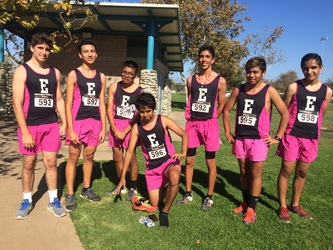
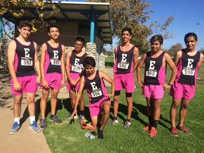
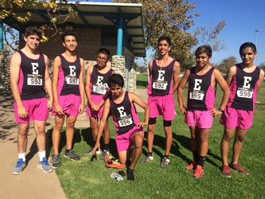

Angel Morales
Enter bio here
Enter bio here
My name is Angel Morales and I was born in Costa Mesa, California. For High School, I attended Estancia High School where I was involved in many extra-curricular activities. One of them was being involved in my High School's Production Drama. In Production Drama, I participated in plays, musicals, and comedies. One of the musicals was Shrek: The Musical, which was a lot of fun and I met many of my best friends. It was also a fun experience to participate in a musical which took homage to one of the most iconic movies of my generation. I was also in my High School's Cross Country team, which taught me discipline and hard work. My third year of doing the sport, I was named the MVP, for achieving the fastest time for the year. I was also involved in a program titled the Simon Scholars, which selected four males from my high school and awarded them a $16k scholarship. The program taught us many things we should expect from college, such as how to prepare for the SATs, ACTs, and how to properly write essays for college. Throughout my time in high school, I was also involved in a club called Key Club, which focused on giving back to the community. Among the services we provided were cleaning up weeds at our local community park so beautiful flowers can grow, making peanut butter and jelly sandwiches for the homeless, cleaning up the beach, and raising money for various fundraisers which include Kelly's closet. My first job was at Chuck E. Cheese, which was a lot of fun because I got to work with many of my friends from High School. While I was working there, my main tasks were to host parties and be a cashier. In the end of my junior year, I then moved to Irvine, California and got a job at Panera. While throughout my time at Panera, I performed the duties of a cashier and a barista. Being a barista was a lot of fun to me because you get to make different types of drinks such as latte’s and smoothies. I resigned from my position at Panera and moved out of Irvine when I graduated High School in 2019 because I then started to attend school at the University of California, Riverside. I declared Sociology as my major because I would like to work in Law Enforcement when I am older or in an office. Moving out at first was hard for me, just because I was so accustomed to having my own bedroom, bathroom, and shower. All of a sudden, I didn’t have any of that and had to share all of those things with multiple people. Since then, I have moved back home because of the COVID-19 pandemic and I currently work at Ralphs Fresh Fare, which can be a bit stressful because of the virus that is going on. I hope to graduate in 2023 and earn my BA in Sociology Studies.
Experience
Education
UC Riverside
University of California Riverside
University of California Riverside
Portfolio
 

